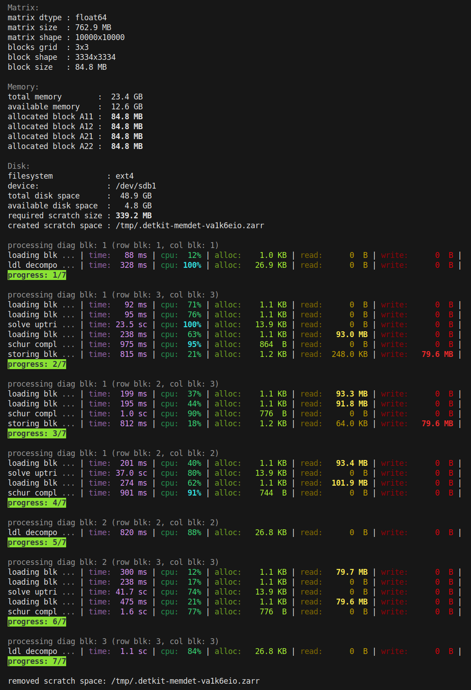

memdet#
- detkit.memdet(A, t=1.0, d=0.0, max_mem=inf, num_blocks=1, assume='gen', triangle=None, mixed_precision='float64', parallel_io=None, scratch_dir=None, overwrite=False, return_info=False, check=False, flops=False, verbose=False)#
Compute log-determinant under memory constraint.
This function computes the determinant of the matrix
\[\mathbf{M} = t \mathbf{A} + \mathbf{D}\]where \(\mathbf{A}\) is a square matrix, \(t\) is a real scalar, and \(\mathbf{D}\) is a diagonal matrix.
- Parameters:
- Anumpy.ndarray, numpy.memmap, zarr.Array, dask.array, tensotstore.array
Square dense matrix \(\mathbf{A}\). This matrix can be given either as an array that is already loaded on the memory (such as
numpy.ndarray), or if it cannot fit on the memory capacity, it can be provided as a memory map on disk, such as Numpy’smemmap, Zarr, Dask, or TensorStore array formats.- tfloat, default=1.0
Scalar \(t\).
- dfloat, numpy.array, default=0.0
If
dis a scalar, the diagonal matrix \(\mathbf{D}\) is assumed to be \(\mathbf{D} = d \mathbf{I}\) where \(\mathbf{I}\) is the identity matrix. Ifdis given as an array \(\boldsymbol{d}\) of size \(n\), the diagonal matrix \(\mathbf{D}\) is constructed by \(\mathbf{D} = \mathrm{diag}(\boldsymbol{d})\).- max_memfloat or str, default=
float('inf') The maximum memory allowed to be allocated during the computation. This can be specified as an integer representing the number of bytes, or as a string such as
16.2GB(a number immediately followed by the unit of memory such asB,KB,MB,GB,TB, etc).The default value of
float('inf')indicates infinite amount of memory is available, hence, no memory is constrained. This case falls back to conventional computation of log-determinant on memory without creation of any scratchpad space on disk.Note
To constrain memory, you can either set
max_memor directly set the number of matrix blocks (seenum_blocksoption). Ifmax_memis set,num_blockoption is ignored.- num_blocksint, default=1
Number of memory blocks along rows and columns. This is used when the whole matrix cannot be loaded on the memory, rather, smaller blocks of the matrix are loaded on the memory.
If =1: the whole matrix is loaded to memory as one block. No scratchpad disk space is needed as all data is on memory.
If =2: matrix is decomposed to 2 by 2 memory blocks (four blocks), but three of these blocks will be loaded concurrently to memory. No scratchpad disk space is needed.
If >2: matrix is decomposed to a grid of (
num_blocks,num_blocks) blocks, but only 4 of these blocks will be loaded concurrently. Scratchpad disk space will be created (seescratch_diroption).
The number of blocks may or may not be a divisor of the matrix size. If the number of blocks is not a divisor of the matrix size, the blocks on the last row-block and column-block will have smaller size.
Note
To constrain memory, you can either set
num_blocksor directly set the amount of memory limit (seemax_memoption). Ifmax_memis set, the givennum_blockoption by the user is ignored, and instead computed automatically.- triangle
'l','u', or None, default=None When the matrix is symmetric, this option indicates whether the full matrix is stored or only a triangular part of the matrix is given:
'l': assumes the lower-triangular part of the matrix is given.'u': assumes the upper-triangular part of the matrix is given.None: indicates full matrix is given.
- assumestr {
'gen','sym','spd'}, default='gen' Assumption on the input matrix A:
'gen': generic square matrix'sym': symmetric matrix'spd': symmetric positive-definite matrix
The assumption on the matrix is not checked.
- mixed_precisionstr {
'float32','float64'}, or numpy.dtype, default='float64' The precision at which the computations are performed. This may be different than the data type of the input matrix. It is recommended to set a precision equal or higher than the dtype of the input matrix. For instance, if the input matrix has
float32data type, you may set this option tofloat64.- parallel_iostr {
'multiproc','dask','tensorstore'} or None, default=None Parallel data transfer (load and store operations of each block) from memory to scratchpad on the disk and vice-versa:
'multiproc': utilizes Python’s built-in multiprocessing.'dask': utilizes Dask’s multiprocessing. For this to work, the package dask should be installed.'tensorstore': utilizes TensorStore’s multiprocessing. For this to work, the packages tensorstore and zarr should be installed.None: no parallel processing is performed. All data transfer is performed on a single CPU thread.
Note
The option
'tensorstore'can only be used when the input matrix A is a zarr array. See zarr package.- scratch_dirstr, default=None
When
num_blocksis greater than 2, the computations are performed on a scratchpad space on disk. This option determines the directory where memdet should create a temporary scratch file. IfNone, the default OS’s tmp directory will be used. For instance, in UNIX, this is almost always'/tmp'directory.Note
This directory should have enough space as much as the size of the input matrix (or half of the input matrix size if
triangleoption is set).- overwriteboolean, default=False
Uses the input matrix storage for intermediate computations. This will overwrite the input matrix.
- return_infobool, default=False
Returns a dictionary containing profiling information such as wall and process times, memory allocation, disk usage, etc. See
infovariable in the return section below.- checkbool, default=False
If True, it checks for
infandnanvalues in the matrix.- flopsboolean, default=False
if True, FLOP count will be included in
infooutput underinfo['process']['flops']. This option should be used together with settingreturn_info=True. To use this option, Perf Tool on your machine should be installed and proper permission should be granted (see Perf Tool).Note
This option is for Linux operating system only.
- verbosebool, default=False
Prints verbose output during computation.
- Returns:
- ldfloat
\(\mathrm{logabsdet}(\mathbf{M})\), which is the natural logarithm of the absolute value of the determinant of the input matrix.
- signint
Sign of determinant, \(\mathrm{sign} (\vert \mathrm{det}(\mathbf{B}) \vert)\).
- diagnumpy.array
A one-dimensional array of the size of the number rows (or columns) of the matrix, containing the diagonal elements of the matrix decomposition as follows:
For genetic matrix (when
assume='gen'), this is the diagonal entries of the matrix \(\mathbf{U}\) in the LU decomposition \(\mathbf{P} \mathbf{M} = \mathbf{L} \mathbf{U}\).For symmetric matrix (when
assume='sym'), this is the diagonal entries of the matrix \(\mathbf{D}\) in the LDL decomposition \(\mathbf{P} \mathbf{M} = \mathbf{U}^{\intercal} \mathbf{D} \mathbf{U}\) where \(\mathbf{U}\) is upper-triangular.For symmetric positive-definite matrix (when
assume='spd'), this is the diagonal entries of the matrix \(\mathbf{L}\) in the Cholesky decomposition \(\mathbf{M} = \mathbf{U}^{\intercal} \mathbf{U}\) where \(\mathbf{U}\) is upper-triangular.
- permnumpy.array
A one-dimensional array of the size of number of rows (or columns) of the matrix, containing the row (or column) permutations during the determinant computations, representing the matrix \(\mathbf{P}\) given above. See Notes and Examples below on how to interpret this array.
- if
return_info=True: - infodict
A dictionary containing the following key-values:
'matrix': info about input matrix'dtype': the data type of the input matrix.'matrix_shape': shape of the input matrix.'triangle': in case of symmetric matrix, whether upper or lower triangle part of matrix is given (based ontriangleoption).'assume': whether matrix is generic, symmetric, or symmetric and positive-definite (based onassumeoption).
'process': info about the computation process and profiling'processor': name of the CPU processor'tot_wall_time': total wall time of the process.'tot_proc_time': total process time of all CPU threads combined.'load_wall_time': wall time for only the load operation, which is the data transfer from disk to memory. This is relevant only if scratchpad space was used during the computation.'load_proc_time': process time of all CPU threads for only the load operation, which is the data transfer from disk to memory. This is relevant only if scratchpad space was used during the computation.'store_wall_time': wall time for only the store operation, which is the data transfer from memory to disk. This is relevant only if scratchpad space was used during the computation.'store_proc_time': process time of all CPU threads for only the store operation, which is the data transfer from memory to disk. This is relevant only if scratchpad space was used during the computation.'hw_inst_count': hardware instruction counts.'flops': FLOPs obtained from hardware instruction counts.'inst_per_flop': Hardware instructions per FLOP.
'block': info about matrix blocks'block_nbytes': number of bytes of each block allocated on the memory. When the number of blocks along row-block (or column-block) is not a divisor of the matrix size, some blocks may be smaller, however, this quantity reports the size of the largest block.'block_shape': shape of each memory block in array size. When the number of blocks along row-block (or column-block) is not a divisor of the matrix size, some blocks may be smaller, however, this quantity reports the size of the largest block.'matrix_blocks': the shape of the grid of blocks that decomposes the input matrix, which is (num_blocks,num_blocks).
'scratch': info about scratchpad space (relevant if used)'io_chunk': the size of data chunks for for input/output data transfer operations between disk and memory. This size is almost always equal to the size of number of rows/columns of each block (seeblock_shapeabove).'num_scratch_blocks': number of blocks stored to the scratchpad space. Note that not all memory blocks are stored, hence, this quantity is smaller thannum_blocks * num_blocks.'scratch_file': the scratch file that was created, and later deleted after termination of the algorithm. This file was in thescratch_dirand it was a hidden file (for instance, in UNIX, it has a dot prefix).'scratch_nbytes': the size of scratchpad file in bytes.'num_block_loads': a counter of the number of times that blocks were read from disk to memory.'num_block_stores': a counter of the number of times that blocks were written from memory to disk.
'memory': info about memory allocation'alloc_mem': block memory allocated in bytes divided bymem_unit.'alloc_mem_peak': block peak memory allocated in bytes divided bymem_unit.'total_mem': total memory allocated in bytes divided bymem_unit. This includes the memory of blocks and any extra memory required by the algorithm.'total_mem_peak': total peak memory allocated in bytes divided bymem_unit. This includes the memory of blocks and any extra memory required by the algorithm.'mem_unit': the unit in which the above memory are reported with. This is usually the memory (in bytes) of one block, so it makes the above memory memory sizes relative to the memory size of one block.
'solver': info about the solver'version': version of detkit package'method': method of computation, such as LU decomposition , LDL decomposition, or Cholesky decomposition, respectively for generic, symmetric, or symmetric positive-definite matrices.'dtype': the data type used during computation (see'mixed_precision'option).'order': order of array, such asCfor contiguous (row-major) ordering orFfor Fortran (column-major) ordering during computation.
- Raises:
- RuntimeError
Error raised when
assume='spd'and matrix \(\mathbf{M}\) is not symmetric positive-definite.
See also
Notes
How to Limit Memory Usage:
If the whole matrix cannot be loaded on the memory, this function chunks the matrix into smaller sub-matrices (blocks) and load three or four of these blocks concurrently to the memory.
For instance, if your matrix size is 100 GB, and your machine has 16 GB memory, you may need a grid of 5 by 5 blocks (25 blocks), each having 100 GB / 25 = 4 GB in size. Four of these blocks take 16 GB, which can fit your machine’s memory.
There are two ways to set the memory limit:
either directly, by setting
max_memargument (such as16GBin the above example),or indirectly, by setting
num_blocksargument (such as 5 in the above example).
You only need to set one of these arguments, but not both. However, if you set
max_mem, the argumentnum_blocksis ignored, and rather, recalculated frommax_mem.What is Scratch:
When
num_blocksis 1 or 2 (a grid of 1x1 or 2x2 blocks), all calculations are performed on the memory, even if the whole input matrix cannot be fit on the memory (in case of 2x2 blocks)!However, for larger number of blocks (when
num_blocksis greater than 2), this function creates a temporary space on your disk to store the variables during the inner computations. This space (called scratchpad) is a hidden file created in thescratch_dirdirectory, and will be automatically removed once this function returns.If you do not specify
scratch_dir, the tmp directory in your operating system (such as/tmpin UNIX) will be used.What is Parallel IO:
This function reads and writes to the scratchpad on your disk. For very large matrices (and hence, very large blocks) the read/write operations (io operations) can be time consuming. You can leverage the
parallel_ioargument to let all CPU threads performing these tasks in parallel. However, note that, depending on your hardware, your disk may throttle parallel file operations.Using Dask:
When using Dask (either if the input array
Ais a Dask array or whenparallel_io='dask'), you should calldetkit.memdet()function in a protected if-clause. See further details at multiprocessing-error-without-if-clause-protection.The “diag” and “perm” Output Variables:
In addition to the log-abs-determinant (
ld) and sign of determinant (sign) variables, this function also returns thediagandpermvariables. Both of these variables are one-dimensional array of size n (the number of rows or columns ofA), and can be used to compute the log-abs-determinants of all leading (principal) sub-matrices ofA(or a permutation ofA) of any sizemwheremcan be 1 to n. Here is how to usediagandperm:Denote the sub-matrix
A[:m, :m]as \(\mathbf{M}_{[:m, :m]}\) and the elementdiag[i]as \(d_i\). We describe the process for each of the three cases of generic, symmetric, and symmetric positive-definite matrices separately.For generic and symmetric matrices (if
assumeis set to'gen'or'sym'), define the row-permutations of the original matrix as \(\mathbf{B} = \mathbf{P}^{\intercal} \mathbf{M}\). This can be computed byB = A[perm, :]. Then\[\log \vert \mathrm{det}(\mathbf{B}_{[:m, :m]}) \vert = \sum_{i=1}^{m} \log \vert d_i \vert.\]For symmetric matrix (if
assumeis set to'sym'), define the row and column permutations of the original matrix as \(\mathbf{B} = \mathbf{P}^{\intercal} \mathbf{M} \mathbf{P}\). This can be computed byB = A[perm, :][:, perm]. Then,\[\log \vert \mathrm{det}(\mathbf{B}_{[:m, :m]}) \vert = \sum_{i=1}^{m} \log \vert d_i \vert.\]For symmetric positive-definite matrix (if
assumeis set to'spd'), no permutation is performed, and the arraypermrepresents identity matrix (meaning no permutation), and hence, we do not need to use it. As such,\[\log \vert \mathrm{det}(\mathbf{M}_{[:m, :m]}) \vert = 2 \sum_{i=1}^{m} \log \vert d_i \vert.\]
The output variable
ldcan also be retrieved fromdiagwhen \(m = n\) in the above formulations.Note that computing
diagandpermare by-products of the algorithms for free and they do not require any additional cost.Counting FLOPs:
FLOPs are counted when
flops=Trueandreturn_info=Trueare set. FLOPs counts are stored atinfo['process']['flops'].To compute FLOPs, you should install Perf Tool and grant necessary permissions to the kernel. Computing FLOPs with Perf Tool can only be done on Linux machines.
FLOPS are computed by multiplying hardware instruction counts (which can be found at
info['process']['hw_inst_count']and instructions per FLOP (which can be found atinfo['process']['inst_per_flop']).Single instruction, multiple data (SIMD) factor indicates the number of FLOPS per one hardware instruction count, and this is estimated by
detkit.get_instructions_per_flop().References
[1]Siavash Ameli, Chris van der Heide, Liam Hodgkinson, Fred Roosta, Michael W. Mahoney (2025). Determinant Estimation under Memory Constraints and Neural Scaling Law (under review)
Examples
In this example, we generate a random matrix
A, and for test purposes, we store this matrix on the disk as a zarr arrayz. You can either passAorztodetkit.memdet().>>> # Create a symmetric matrix >>> import numpy >>> n = 10000 >>> A = numpy.random.randn(n, n) >>> A = A.T + A >>> # Store matrix as a zarr array on disk (optional) >>> import zarr >>> z_path = 'matrix_file.zarr' >>> z = zarr.open(z_path, mode='w', shape=(n, n), dtype=A.dtype) >>> z[:, :] = A >>> # Compute log-determinant while limiting memory to 500 MB >>> from detkit import memdet >>> ld, sign, diag, perm, info = memdet(z, max_mem='500MB', ... assume='sym', ... parallel_io='tensorstore', ... verbose=True, return_info=True) >>> # logarithm of absolute value of determinant >>> print(ld) 82104.567748 >>> # sign of determinant >>> print(sign) -1
By setting
verbose=True, a detailed log is printed during the computation, as shown in the screenshot below.The above logs illustrate how the matrix is processed. For example, due to the memory limit of 500 MB, a matrix of size 762.9 MB is decomposed into smaller blocks (a grid of 3 by 3 blocks), where each block is 84.8 MB. At any time, only four of these blocks are concurrently loaded into memory: blocks A11, A12, A21, and A22. The allocated size of each block is shown.
In the above, the computation was performed in 7 steps. The number of steps vary depending the number of blocks. Each step may involve:
Loading a block from disk to memory (loading blk)
Storing a block from memory back to disk (storing blk)
Performing LU, LDL, or Cholesky decomposition (e.g. ldl decompo)
Solving an upper triangular system of equations (solve uptri)
Solving a lower triangular system of equations (solve lotri)
Computing the Schur complement (schur compl)
For each task, the proceeding columns in the verbose prints are as follows:
time: CPU process time
cpu: CPU utilization percentage (for all CPU threads combined)
alloc: Peak memory allocation during the task
read: Data read from scratchpad on disk
write: Data written to scratchpad on disk
Note that an efficient implementation should not allocate any new memory during any of the above tasks during the computation. The only memory allocation should be the creation of the blocks at the beginning. As seen in the screenshot above, all memory allocations (on the order of KB) are negligible compared to the size of a block (on the order of MB), indicating that no new array is created.
The above code also returns the
infovariable by settingreturn_info=True. Here is a pretty-print ofinfodictionary:>>> # Print info results >>> from pprint import pprint >>> pprint(info)
which gives the following output:
{ 'block': { 'block_nbytes': 88924448, 'block_shape': (3334, 3334), 'matrix_blocks': (1, 1) }, 'matrix': { 'assume': 'sym', 'dtype': 'float64', 'matrix_shape': (10000, 10000), 'triangle': None }, 'memory': { 'alloc_mem': 4.003514331626776, 'alloc_mem_peak': 4.004212868434112, 'mem_unit': '88924448 bytes', 'total_mem': 0.0009245601389620096, 'total_mem_peak': 0.0027315772598329765 }, 'process': { 'load_proc_time': 4.354914859999929, 'load_wall_time': 2.3955368995666504, 'num_proc': 8, 'processor': ' Intel(R) Core(TM) i7-4770K CPU @ 3.50GHz', 'store_proc_time': 1.6077849289999904, 'store_wall_time': 1.626847743988037, 'tot_proc_time': 600.250950974, 'tot_wall_time': 115.73805451393127 }, 'scratch': { 'io_chunk': 3334, 'num_block_loads': 11, 'num_block_stores': 2, 'num_scratch_blocks': 4, 'scratch_file': '/tmp/.detkit-memdet-va1k6eio.zarr', 'scratch_nbytes': 0 }, 'solver': { 'dtype': 'float64', 'method': 'ldl decomposition', 'order': 'F', 'version': '0.6.1' } }
Working with “diag” and “perm” outputs:
The following shows how to use
diagandpermfor a generic matrix:>>> # Create a symmetric matrix >>> import numpy >>> n = 100 >>> A = numpy.random.randn(n, n) >>> # Compute log-determinant for generic matrix >>> from detkit import memdet >>> ld, sign, diag, perm = memdet(A, assume='gen', num_blocks=3) >>> # Compute log-determinants of all sub-matrices using diag and perm >>> lds = numpy.cumsum(numpy.log(numpy.abs(diag))) >>> # The above lds array are the log-determinants of the principal >>> # sub-matrices of the following matrix >>> B = A[perm, :] >>> # Directly compute logdet of sub-matrices of B (for comparison) >>> from detkit import logdet >>> lds2 = numpy.empty(B.shape[0]) >>> for i in range(B.shape[0]): ... lds2[i], _ = logdet(B[:i+1, :i+1]) >>> # The two arrays lds and lds2 should be identical. >>> numpy.allclose(lds, lds2) True
For symmetric matrix, the matrix
Bin the above should be defined asB = A[perm, :][:, perm]. Here is the full code for symmetric matrix:>>> # Create a symmetric matrix >>> import numpy >>> n = 100 >>> A = numpy.random.randn(n, n) >>> A = A + A.T # symmetric matrix >>> # Compute log-determinant for symmetric matrix >>> from detkit import memdet >>> ld, sign, diag, perm = memdet(A, assume='sym', num_blocks=3) >>> # Compute log-determinants and sign of determinants of all >>> # sub-matrices using diag and perm >>> lds = numpy.cumsum(numpy.log(numpy.abs(diag))) >>> signs = numpy.cumprod(numpy.sign(diag)) >>> # The above lds array are the log-determinants of the principal >>> # sub-matrices of the following matrix >>> B = A[perm, :][:, perm] >>> # Directly compute logdet of sub-matrices of B (for comparison) >>> from detkit import logdet >>> lds2 = numpy.empty(B.shape[0]) >>> signs2 = numpy.empty(B.shape[0]) >>> for i in range(B.shape[0]): ... lds2[i], signs2[i] = logdet(B[:i+1, :i+1]) >>> # The two arrays lds and lds2 should be identical. >>> print(numpy.allclose(lds, lds2)) True >>> # The two arrays signs and signs2 should be identical. >>> print(numpy.allclose(signs, signs2)) True
For symmetric positive-definite matrices, the
permoutput is not needed. Here an example on how to usediag. Note that for these matrices, the sign of determinant is always+1as the determinant is always positive, so we do not check it here.>>> # Create a symmetric matrix >>> import numpy >>> n = 100 >>> A = numpy.random.randn(n, n) >>> A = A @ A.T # symmetric positive-definite matrix >>> # Compute log-determinant for symmetric positive-definite matrix >>> from detkit import memdet >>> ld, sign, diag, perm = memdet(A, assume='spd', num_blocks=3) >>> # Compute log-determinants of all sub-matrices using diag. >>> # Note, here, the multiplication factor 2.0 is needed. >>> lds = 2.0 * numpy.cumsum(numpy.log(numpy.abs(diag))) >>> # Directly compute logdet of sub-matrices of A (for comparison) >>> from detkit import logdet >>> lds2 = numpy.empty(A.shape[0]) >>> for i in range(A.shape[0]): ... lds2[i], _ = logdet(A[:i+1, :i+1]) >>> # The two arrays lds and lds2 should be identical. >>> numpy.allclose(lds, lds2) True